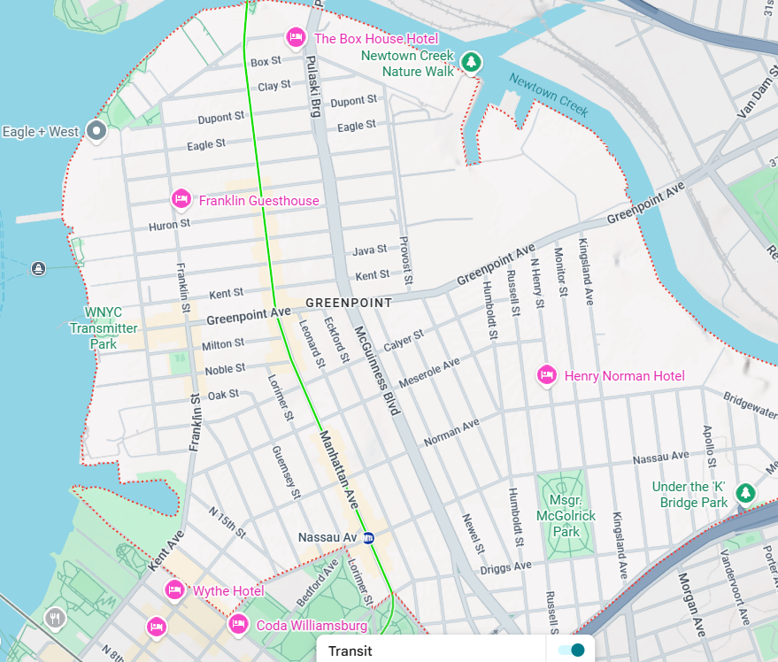
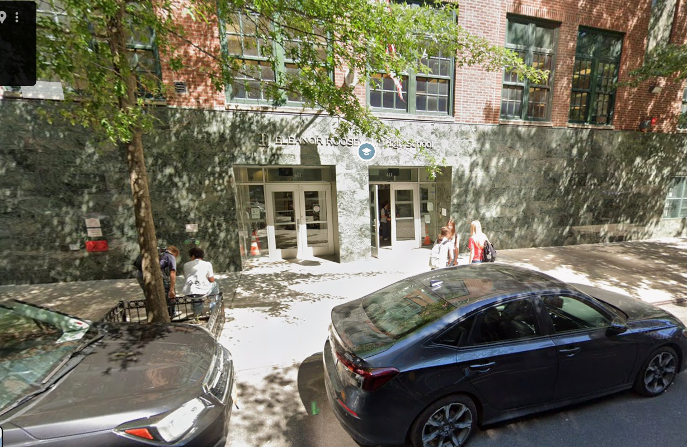

This is my amazing fanpage website deticated to Burt. Scroll down to learn more.


Burt lives in Greenpoint.

We go to school at Eleanor Roosevelt High School.
Bibliography

Lukas, a self motivated student at elro, created for the sole purpose of praising burt. Lukas is tres neiche parce que his name contains a k, therfore he was born to be neiche from the start. Lukas worked on many games as a developer (they most kinder suck) over the past 5 years. I suppose you can call him an artist of his domain. He surpasses sterio types by being incredible studious while maintaining his hansome and tuff properties. One might ponder how one is capable; one must seek guidence directed by the one and only lukas soleo.
Lukas knows who you are.

Pov you: